<!DOCTYPE html>
<html lang="ko">
<head>
    <meta charset="UTF-8">
    <meta name="viewport" content="width=device-width, initial-scale=1.0">
    <title>MVB: Dual Legacy Award System</title>
    <style>
        /* 1. 기본 스타일: 모든 여백 제거 및 박스 모델 설정 */
        * {
            box-sizing: border-box;
            margin: 0;
            padding: 0;
        }

        body {
            background-color: #000;
            color: #fff;
            font-family: 'Apple SD Gothic Neo', sans-serif;
            overflow-x: hidden;
            width: 100%;
        }

        /* 2. 헤더: 초기에는 보이지 않음 */
        header {
            position: fixed;
            top: 0;
            left: 0;
            width: 100%;
            background-color: rgba(0, 0, 0, 0.95);
            padding: 25px 0;
            z-index: 1000;
            display: flex;
            justify-content: center;
            opacity: 0;
            visibility: hidden;
            transform: translateY(-100%); /* 위로 숨김 */
            transition: all 0.5s cubic-bezier(0.4, 0, 0.2, 1);
        }

        /* 스크롤 시 나타나는 클래스 */
        header.active {
            opacity: 1;
            visibility: visible;
            transform: translateY(0);
        }

        .header-inner {
            width: 95%; /* 바디와 일치시킨 가로폭 */
            display: flex;
            align-items: center;
        }

        .header-logo {
            height: 30px;
            width: auto;
            display: block;
        }

        /* 3. 첫 번째 영상 섹션: Relative Full Screen (가로 100%) */
        .hero-section {
            width: 100%;
            position: relative;
            background: #000;
            line-height: 0; /* 미세 유격 방지 */
        }

        /* 16:9 비율 유지용 컨테이너 */
        .aspect-ratio-box {
            position: relative;
            width: 100%;
            padding-top: 56.25%; /* 16/9 = 0.5625 */
            overflow: hidden;
        }

        .aspect-ratio-box iframe {
            position: absolute;
            top: 0;
            left: 0;
            width: 100%;
            height: 100%;
            border: none;
        }

        /* 4. 바디 컨텐츠: 가로폭 80% */
        .content-container {
            width: 80%;
            margin: 0 auto;
            padding: 50px 0;
        }

        section {
            width: 100%;
            margin-bottom: 120px;
        }

        .image-box img {
            width: 100%;
            height: auto;
            display: block;
        }

        footer {
            padding: 0px 0 120px 0; /* 상단 80px, 하단 120px로 대폭 축소 */
            display: flex;
            flex-direction: column;
            justify-content: center;
            align-items: center;
            background-color: #000;
        }

        .footer-link {
            display: inline-block;
            text-decoration: none; /* 링크 밑줄 제거 */
            cursor: pointer;
        }

        .footer-logo {
            width: 500px;
            max-width: 100%;
            height: auto;
            opacity: 0.8;
            transition: opacity 0.3s ease; /* 마우스 올렸을 때 부드러운 변화 */
        }

        .footer-logo:hover {
            opacity: 1; /* 마우스 올리면 선명해짐 */
        }
    </style>
</head>
<body>

    <!-- 헤더 영역 -->
    <header id="main-header">
        <div class="header-inner">
            
        </div>
    </header>

    <!-- [1번 영상] 전체 화면 너비 사용 -->
    <div id="trigger-point" class="hero-section">
        <div class="aspect-ratio-box">
            <iframe src="https://player.vimeo.com/video/1190321204?background=1&autoplay=1&loop=1&byline=0&title=0" 
                    allow="autoplay; fullscreen"></iframe>
        </div>
    </div>

    <!-- [바디] 80% 너비 컨테이너 -->
    <div class="content-container">
        <!-- 첫 번째 사진 -->
        <section class="image-box">
            
        </section>

        <!-- 중간 영상 (80% 폭 내에서 비율 유지) -->
        <section class="aspect-ratio-box">
            <iframe src="https://player.vimeo.com/video/1190321401?background=1&autoplay=1&loop=1&byline=0&title=0" 
                    allow="autoplay; fullscreen"></iframe>
        </section>

        <!-- 두 번째 사진 -->
        <section class="image-box">
            
        </section>
    </div>

    <!-- 바텀 영역 -->
    <footer>
        <!-- href="연결하고 싶은 주소"를 입력하세요 -->
        <a href="https://www.behance.net/gallery/248972801/MVB-Dual-Legacy-Award-System" target="_blank" class="footer-link">
            
        </a>
    </footer>

    <script src="https://player.vimeo.com/api/player.js"></script>

    <script>
        document.addEventListener('DOMContentLoaded', () => {
            const header = document.getElementById('main-header');
            const trigger = document.getElementById('trigger-point');

            const handleScroll = () => {
                // 첫 번째 영상 섹션의 하단 위치를 실시간으로 측정
                const rect = trigger.getBoundingClientRect();
                
                // 창 크기와 관계없이 첫 번째 영상의 하단이 브라우저 최상단에 닿거나 넘어가면 노출
                // 여유값(-10)을 주어 더 매끄럽게 처리
                if (rect.bottom <= 10) {
                    header.classList.add('active');
                } else {
                    header.classList.remove('active');
                }
            };

            // 스크롤 이벤트 등록
            window.addEventListener('scroll', handleScroll);
            // 창 크기가 바뀔 때를 대비해 한 번 더 체크
            window.addEventListener('resize', handleScroll);
        });
    </script>
</body>
</html>